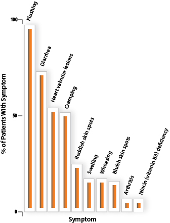

Understanding Carcinoid Syndrome
What Is Carcinoid Syndrome?
Carcinoid syndrome is a set of symptoms that may occur in patients who have carcinoid tumors (neuroendocrine tumors, or NET, often in the gastrointestinal [GI] tract or lungs). Not all people with carcinoid tumors have carcinoid syndrome.
Carcinoid tumors may arise in many locations, but they are most commonly found in the GI tract or the lungs.
Carcinoid syndrome and serotonin
Carcinoid syndrome occurs when carcinoid tumors overproduce substances such as serotonin that normally circulate throughout your body.
When excess serotonin reaches tissues in the GI tract, the lungs, or the skin, it causes some of the symptoms of carcinoid syndrome. The two main symptoms of carcinoid syndrome are flushing and diarrhea.
What happens when carcinoid tumors spread to the liver?
Carcinoid tumors often do not produce noticeable symptoms until they spread (metastasize) to the liver. That’s because most of the blood circulation from the GI tract must pass through the liver before it reaches the rest of the body.
The liver has enzymes that prevent excess serotonin and other substances produced by the carcinoid tumors from causing symptoms. When carcinoid tumors spread to the liver, the substances they overproduce can more easily reach your blood stream and tissues where they can cause symptoms.
Carcinoid syndrome symptoms
If you have been diagnosed with carcinoid syndrome, you probably already have experienced some of the symptoms, such as flushing, wheezing, and diarrhea. Because many of the early symptoms of carcinoid syndrome are difficult to diagnose, many people live with the symptoms for years before learning what the problem is.
Identifying the symptoms of carcinoid syndrome early is a benefit in fighting the condition. This section may help you better understand the symptoms of carcinoid syndrome. Not every person with carcinoid syndrome will have all of these symptoms.

This graph shows the frequency of signs and symptoms of carcinoid syndrome occurring in a sample of 138 cases.
Learn More About Symptoms
It is important to always keep your health care team informed if you experience any of these symptoms, so you can better manage your disease.
About 78% of people with carcinoid syndrome experience diarrhea, which can happen with flushing or by itself. Stools are watery and the diarrhea can be mild or severe. Episodes can occur several times a day and interfere with daily life. Patients with severe cases of diarrhea often have trouble leaving their homes for work, social functions, or activities that require being away from home or on the move for a long time. Diarrhea can drain your body of water, causing dehydration and electrolyte loss. Without enough water and electrolytes, proper digestion cannot occur, preventing your body from receiving the nutrients it needs while worsening weight loss, weakness, and fatigue. Diarrhea resulting from carcinoid syndrome may also occur at night (nocturnal diarrhea). The occurrence of nocturnal diarrhea can be an important clue that a person is experiencing carcinoid syndrome, because this does not usually occur with irritable bowel syndrome (IBS).
One of the more serious symptoms of carcinoid syndrome is heart valvular lesions, a condition in which excess serotonin causes injury to the valves in the heart. This leads to a unique set of problems with the way your heart functions, called carcinoid heart disease. Cardiac disease develops in 11% to 66% of carcinoid syndrome patients.
People with carcinoid syndrome may experience abdominal cramping, a painful condition in which normal bowel movements are prevented. These cramping episodes may occasionally develop into intestinal obstruction, a serious condition that requires medical attention.
Exposure of lung tissues to abnormally high levels of certain substances can cause the blood vessels to constrict and narrow the airway passages, making it difficult to breathe. This wheezing can be mistaken for asthma.
Although the causes are not known, people with carcinoid syndrome are more likely than the general population to develop arthritis.